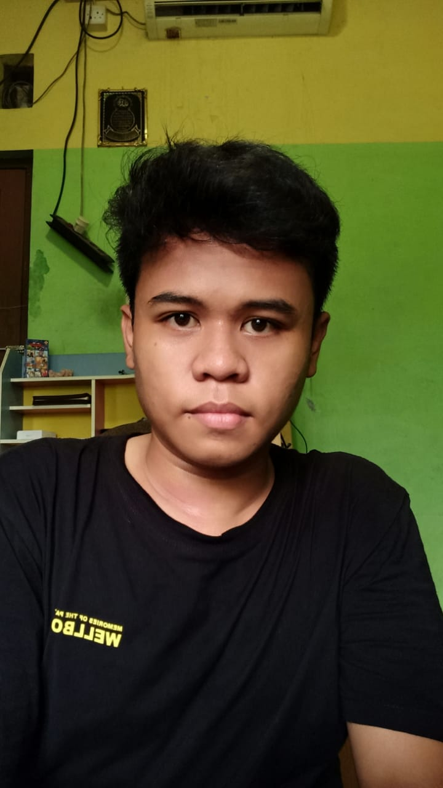

CURRICULUM VITAE
NAMA
: Pangeran Achmad Yunus

TTL
: Tangerang, 7 Januari 2003
JENIS KELAMIN
: Laki-Laki
AGAMA
: Islam
STATUS
: Belum Menikah
ALAMAT
: Vila Regensi TNG II BLOK AE 1/33
EMAIL
:
achmad.anan@gmail.com
PENDIDIKAN
2008-2014 : SDIT AL-HIKMAH
2014-2017 : SMPN 1 PASARKEMIS
2017-2020 : SMAN 24 KAB TANGERANG
2021-2025 : STT NURUL FIKRI, Jurusan Sistem Informasi, Depok Jawa Barat.
KEAHLIAN
Mengoperasikan Komputer
Microsoft Word, Excel, PowerPoint